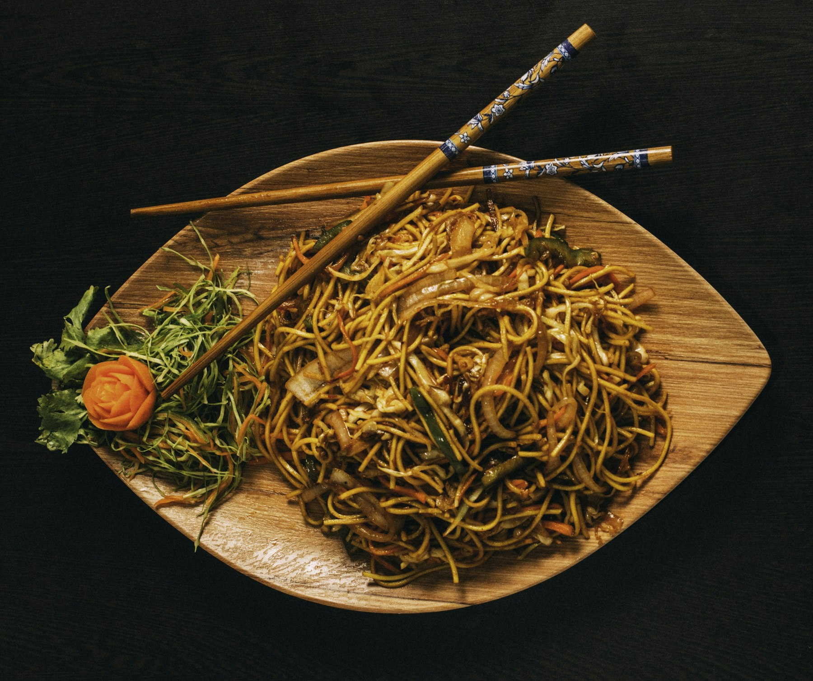

Eén-persoonsmenu
1 persoon
€12,00
- A Babi Pangang & Tjap Tjoy
- B Koe Loe Kai & Foe Yong Hai
- C Babi Pangang & Foe Yong Hai
- D Foe Yong Hai & Tjap Tjoy
- E Babi Pangang & Saté (3 stokjes)
Met een keuze uit: nasi, bami of witte rijst

Chinees-Indisch afhaalcentrum in Hengelo
Kwalitatief genieten, uit onze originele Chinese keuken.
Ma, wo, do 16-21 uur · vr t/m zo 12-21 uur
Het afhaalcentrum bij u in de buurt! Wij brengen u de rijke smaken van de Chinese en Indische keuken, zorgvuldig samengesteld om uw smaakpapillen te verwennen.
Ontdek onze uitgebreide menukaart en afhaalmenu's, waaronder onze rijsttafels: perfect voor een feestelijke maaltijd met vrienden en familie. Voor speciale gelegenheden is er onze Catering Service.
Waar smaken samenkomen.
Bij Lin Shing Hengelo nodigen we u uit om een culinaire reis te maken door de authentieke smaken van de Chinese en Indische keuken. Onze passie voor koken komt tot leven in elk gerecht dat met liefde en zorg is bereid.


Chinees, Indisch of allebei: zes rijsttafels voor 2 of 4 personen, perfect voor een feestelijke maaltijd. Tik op een rijsttafel voor wat erin zit.

Voor 2 personen
Met een keuze uit nasi, bami of witte rijst
Met een keuze uit nasi, bami of witte rijst
Met een keuze uit nasi, bami of witte rijst
Voor 4 personen
Inclusief twee bakken: nasi, bami en/of witte rijst
Inclusief twee bakken: nasi, bami en/of witte rijst
Inclusief twee bakken: nasi, bami en/of witte rijst
De hele kaart, met de nummers die u bij het bestellen kunt noemen. Prijzen zijn inclusief btw.



Dé authentieke Chinese keuken voor elke viering! Laat je verleiden door de smaken van onze Chinese gerechten, perfect voor elk evenement met 15 of meer gasten.
Elk gerecht wordt zorgvuldig bereid en warm geserveerd in chafing dishes. Of je nu een gezellige bijeenkomst organiseert of een groot feest: zo geniet je optimaal van het eten én van je gasten.
Voorkom teleurstelling, informeer tijdig!

Cateringmenu's
€12,- p.p.
€14,- p.p.
€16,- p.p.
€18,- p.p.
Buffetten
€11,50 p.p.
€13,50 p.p.
€17,- p.p.
Let u op gluten of andere allergenen? Bekijk onze glutenkaart of vraag het ons bij het bestellen.
Bestellen gaat het snelst telefonisch. Dinsdag zijn we gesloten.
Bandoengstraat 54
7556 TG Hengelo (ov.)
074-2909695
info@linshinghengelo.nl
| Maandag | 16:00 - 21:00 |
| Dinsdag | gesloten |
| Woensdag | 16:00 - 21:00 |
| Donderdag | 16:00 - 21:00 |
| Vrijdag | 12:00 - 21:00 |
| Zaterdag | 12:00 - 21:00 |
| Zondag | 12:00 - 21:00 |
| Op feestdagen | 12:00 - 21:00 |